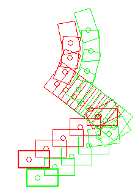

Locomotion control¶
NAOqi Motion - Overview | API | robot position Tutorial
What it does¶
This API is dedicated to make robot move to places.
There are 3 high-level ways to control the locomotion.
| Use ... | To set ... |
|---|---|
ALMotionProxy::moveTo |
a target pose on the ground plane, that the robot will walk to. |
ALMotionProxy::move |
the robot’s instantaneous velocity (direction and intensity) in SI units (typically used to control the walk from a loop, with external input such as a visual tracker). |
ALMotionProxy::moveToward |
the robot’s instantaneous normalized velocity (direction and intensity) interactively (typically used to control the robot from a joystick, when the input gets normalized anyway). |
In addition, Move config parameters allows altering the default walk settings.
For even more control over the walk, one may also use
ALMotionProxy::setFootSteps or
ALMotionProxy::setFootStepsWithSpeed, to provide the exact
footsteps NAO will follow.
For a more specialized version of locomotion methods, see also: ALNavigation and ALVisualCompass.
Performance and Limitations¶
 NAO¶
NAO¶
NAO‘s walk is stabilized using feedback from his joint sensors. This makes the walk robust against small disturbances and absorbs torso oscillations in the frontal and lateral planes.
NAO is able to walk on multiple floor surfaces such as carpet, tiles and wooden floors.
He can transition between these surfaces while walking. However, large obstacles can still make him fall, as he assumes that the ground is more or less flat.
{kind=link}
 Pepper¶
Pepper¶
Specific security requirement¶
On Pepper, ALMotion API are prohibited if power hatch is open.
To use this API make sure the power hatch is closed.
How it works¶
NAO¶
NAO‘s walk uses a simple dynamic model (Linear Inverse Pendulum), inspired by work of Kajita et al. [1], and is solved using quadratic programming [2].
References
| [1] | S. Kajita and K. Tani. Experimental study of biped dynamic walking in the linear inverted pendulum mode. IEEE Int. Conf. on Robotics and Automation, 1995. |
| [2] | P-B. Wieber. Trajectory-free linear model predictive control for stable walking in the presence of strong perturbation. IEEE Int. Conf. on Humanoids, 2006. |
Footstep planner¶
A foot position is defined by an ALMath::Pose2D (libalmath API reference) relative to the last position of the other foot.
{kind=link}
Position of one foot relative to the other as given by a translation (pX, pY) followed by a rotation of pTheta around the vertical axis. These three parameters are bundled in an ALMath::Pose2D.
The foot planner is used by the walk process, irrespective of the walk control
used. When using ALMotionProxy::moveTo, ALMotionProxy::move or
ALMotionProxy::moveToward, the planner chooses the best foot placement.
If you plan the robot footsteps on your own and feed them to ALMotion using
ALMotionProxy::setFootSteps or
ALMotionProxy::setFootStepsWithSpeed, the builtin planner clips
the given footsteps to ensure the resulting motions are both collision
and singularity free.
The planner work is governed by several parameters which are described in Gait parameters section. The clipping algorithms are described in Footsteps clipping section.
Gait parameters¶
These parameters are used by the planner when planning the footsteps and/or clipping them. The parameters which are marked as user-settable are part of the Move config which can be passed on by the user.
| Name | Default | Minimum | Maximum | Settable | |
|---|---|---|---|---|---|
| MaxStepX | maximum forward translation along X (meters) | 0.040 | 0.001 | 0.080 [3] | yes |
| MinStepX | maximum backward translation along X (meters) | -0.040 | no | ||
| MaxStepY | absolute maximum lateral translation along Y (meters) | 0.140 | 0.101 | 0.160 | yes |
| MaxStepTheta | absolute maximum rotation around Z (radians) | 0.349 | 0.001 | 0.524 | yes |
| MaxStepFrequency | maximum step frequency (normalized, unit-less) | yes | |||
| MinStepPeriod | minimum step duration (seconds) | 0.42 | no | ||
| MaxStepPeriod | maximum step duration (seconds) | 0.6 | no | ||
| StepHeight | peak foot elevation along Z (meters) | 0.020 | 0.005 | 0.035 | yes |
| TorsoWx | peak torso rotation around X (radians) | 0.000 | -0.122 | 0.122 | yes |
| TorsoWy | peak torso rotation around Y (radians) | 0.000 | -0.122 | 0.122 | yes |
| FootSeparation | alter distance between both feet along Y (meters) | 0.1 | no | ||
| MinFootSeparation | minimum distance between both feet along Y (meters) | 0.088 | no |
| [3] | we recommend 0.060 meters for StepX for more stability. Better use 0.080 meters only when walking on flat hard floors. |
Programmatically, you can access some of the gait parameters (Default, Max,
Min), using the ALMotionProxy::getMoveConfig method.
Footsteps clipping¶
The clipping is done in three successive steps, which are explained here with
python functions implementing the same algorithms as ALMotion’s planner.
You can download them here:
almath_foot_clip.py
For python-related troubleshooting, see the Python SDK - Installation Guide section.
The clipping algorithms uses the extremal values from the gait parameters table, and not the default or user-provided ones.
Clip with maximum outreach¶
{kind=link}
Here, the python clipping algorithm is presented:
def clipFootStepOnGaitConfig(footMove, isLeftSupport):
''' Clip the foot move so that it does not exceed the maximum
size of steps.
footMove is an almath.Pose2D (x, y, theta position).
isLeftSupport must be set to True if the move is on the right leg
(the robot is supporting itself on the left leg).
'''
def clipFloat(minValue, maxValue, value):
''' Clip value between two extremes. '''
clipped = value
if (clipped < minValue):
clipped = minValue
if (clipped > maxValue):
clipped = maxValue
return clipped
# Clip X.
clippedX = clipFloat(minStepX, maxStepX, footMove.x)
footMove.x = clippedX
# Clip Y.
if not isLeftSupport:
clippedY = clipFloat(minFootSeparation, maxStepY, footMove.y)
else:
clippedY = clipFloat(-maxStepY, - minFootSeparation, footMove.y)
footMove.y = clippedY
# Clip Theta.
clippedTheta = clipFloat(-maxStepTheta, maxStepTheta, footMove.theta)
footMove.theta = clippedTheta
Clip with ellipse¶
To avoid singularities in the inverse kinematics, we clip the foot step data with an ellipsoid.
We use the AL::Math:clipFootWithEllipse function (libalmath API reference).
The figure below gives an illustration of the allowed zone (blue in the picture).
{kind=link}
Here, the python clipping algorithm with ellipse is presented:
def clipFootStepWithEllipse(footMove):
''' Clip the foot move inside an ellipse defined by the foot's dimansions.
footMove is an almath.Pose2D (x, y, theta position).
'''
# Apply an offset to have Y component of foot move centered on 0.
if (footMove.y < -minFootSeparation):
footMove.y = footMove.y + minFootSeparation
elif (footMove.y > minFootSeparation):
footMove.y = footMove.y - minFootSeparation
else:
return
# Clip the foot move to an ellipse using ALMath method.
if footMove.x >= 0:
almath.clipFootWithEllipse(maxStepX, maxStepY - minFootSeparation, footMove)
else:
almath.clipFootWithEllipse(minStepX, maxStepY - minFootSeparation, footMove)
# Correct the previous offset on Y component.
if footMove.y >=0:
footMove.y = footMove.y + minFootSeparation
else:
footMove.y = footMove.y - minFootSeparation
Clip to avoid collision¶
The last clipping adjust pTheta to avoid collision between the feet using the AL::Math:avoidFootCollision function (libalmath API reference).
The picture below illustrates this clipping. (The grey left foot print was the one given by the user and the black left foot print is the result of the clipping).
{kind=link}
Here, the python clipping algorithm with ellipse is presented:
def clipFootStepToAvoidCollision(footMove, isLeftSupport):
""" Clip the foot move to avoid collision with the other foot.
footMove is an almath.Pose2D (x, y, theta position).
isLeftSupport must be set to True if the move is on the right leg
(the robot is supporting itself on the left leg).
"""
# Bounding boxes of NAO's feet.
rFootBox = [almath.Position2D(0.11, 0.038), # rFootBoxFL
almath.Position2D(0.11, -0.050), # rFootBoxFR
almath.Position2D(-0.047, -0.050), # rFootBoxRR
almath.Position2D(-0.047, 0.038)] # rFootBoxRL
lFootBox = [almath.Position2D(0.11, 0.050), # lFootBoxFL
almath.Position2D(0.11, -0.038), # lFootBoxFR
almath.Position2D(-0.047, -0.038), # lFootBoxRR
almath.Position2D(-0.047, 0.050)] # lFootBoxRL
# Use ALMath method.
almath.avoidFootCollision(lFootBox, rFootBox, isLeftSupport, footMove)
Velocity control¶
Use ALMotionProxy::move, to set NAO’s instantaneous velocity
directly in SI units, or ALMotionProxy::moveToward when normalized
units are better suited.
The python program above illustrates the relationship between normalized step length and frequency and absolute velocity in SI units. The gait parameters used in the program are either the default values (see gait parameters), or the one provided in a Move config, as explained in the next section.
def normalized_length_to_si_length(x_n, y_n, theta_n, f_n, mc,
is_left_support):
"""
Convert the normalized step length and frequency into SI units.
mc is the move config
"""
max_abs_step_x = mc.MaxStepX if (x_n >= 0) else (-mc.MinStepX)
x_si = x * max_abs_step_x
if is_left_support:
y_si = min(y * (mc.MaxStepY - mc.FootSeparation)-mc.FootSeparation,
-MinFootSeparation)
else:
y_si = max(y * (mc.MaxStepY - mc.FootSeparation)+mc.FootSeparation,
MinFootSeparation)
theta_si = x * mc.MaxStepTheta
f_si = 1/(mc.MaxStepPeriod + f_n * mc.MaxStepFrequency * \
(mc.MinStepPeriod - mc.MaxStepPeriod))
return (x_si, y_si, theta_si, f_si)
def normalized_length_to_si_velocity(x_n, y_n, theta_n, f_n, mc_l, mc_r):
"""
Convert the normalized step length and frequency into velocity
in SI units. We consider a full walk cycle: double support, left
support, double support, right support.
mc is the move config
"""
(x_l, y_l, theta_l, f_l) = normalized_length_to_si_length(
x_n, y_n, theta_n, f_n, gc_l, False)
(x_r, y_r, theta_r, f_r) = normalized_length_to_si_length(
x_n, y_n, theta_n, f_n, gc_r, True)
period = 1/f_l + 1/f_r
return ((x_l + x_r)/period,
(y_l + y_r)/period,
(theta_l + theta_r)/period)
Move config¶
It is possible to define custom gait parameters for the walk, by giving a custom Move config.
This allows you to modify the robot gait while still using the usual motion
API. This custom configuration can be used for all
ALMotionProxy::moveTo, ALMotionProxy::move and
ALMotionProxy::moveToward
For example, you can make NAO lift his feet higher to go over some small cables, etc.
A move configuration is defined by the subset of user-settable gait parameters defined in the table above. On can provide a move config per foot or a single common one.
For compatibility reasons, the way to pass per-foot config depends on the method called:
ALMotionProxy::moveToaccepts a single key-value list parameter, which is applied to both feet.ALMotionProxy::moveandALMotionProxy::moveTowardaccept a single key-value list parameter, whose keys may be prefixed with either “Left” or “Right” to target a single foot. For instance, one would do:motionProxy.move(X, Y, Theta, [ ["LeftStepHeight", 0.02], ["RightStepHeight", 0.005], ["RightTorsoWx", -7.0*almath.TO_RAD], ["TorsoWy", 5.0*almath.TO_RAD] ] )
in order to set
TorsoWyto 5 degrees for both feet, and to setTorsoWxandStepHeighton a per-foot basis. Note that, for the left foot, the default value (0.) will be used forTorsoWx. Note also that, in addition to the gait parameters, these two methods accept aFrequencyparameter, which indicates a preferred normalized step frequency.
The following examples give some custom gait for NAO:
Torso height trajectory¶
Since NAOqi version 1.12, the torso height is automatically adjusted to avoid singularities and to enable longer steps.
Beware that using the same gait parameters than in NAOqi version 1.10 together with this new feature will create torso oscillations and could increase the torque needed in the legs joints. This will in turn reduce the battery life and make the joint temperature increase faster.
Arm motions¶
During walk, the arm are used to improve the walk stability and look. The arms motion amplitude during walk is dependent on the step frequency and length.
The arms motion can be activated or deactivated at any moment during a move. Moreover, any user commands for the arms will have priority over the default arm motions during a walk. This enables you to control the arms as you wish. If the default arm movements are enabled, they resume automatically once you have finished controlling arm movements.
# Example showing how to disable left arm motions during a move
leftArmEnable = False
rightArmEnable = True
proxy.setMoveArmsEnabled(leftArmEnable, rightArmEnable)
# disable right arm motion after 10 seconds
time.sleep(10)
rightArmEnable = False
proxy.setMoveArmsEnabled(leftArmEnable, rightArmEnable)
# Example showing how to get the enabled flags for the arms
print 'LeftArmEnabled: ', proxy.getMoveArmsEnabled("LArm")
print 'RightArmEnabled: ', proxy.getMoveArmsEnabled("RArm")
print 'ArmsEnabled: ', proxy.getMoveArmsEnabled("Arms")
Pepper¶
Drive Parameters¶
In addition, passing an optional Move config key-value list, allows you to alter the default drive parameters for the wheeled base. These parameters are listed in the following table.
| Name | Default | Minimum | Maximum | Settable | |
|---|---|---|---|---|---|
| MaxVelXY | maximum planar velocity (meters/second) | 0.35 | 0.1 | 0.55 | yes |
| MaxVelTheta | maximum angular velocity (radians/second) | 1.0 | 0.2 | 2.00 | yes |
| MaxAccXY | maximum planar acceleration (meters/second²) | 0.3 | 0.1 | 0.55 | yes |
| MaxAccTheta | maximum angular acceleration (radians/second²) | 0.75 | 0.1 | 3.00 | yes |
| MaxJerkXY | maximum planar jerk (meters/second³) | 1.0 | 0.2 | 5.00 | yes |
| MaxJerkTheta | maximum angular jerk (radians/second³) | 2.0 | 0.2 | 50.00 | yes |
| MaxVelX | Deprecated maximum planar velocity (meters/second) | 0.7 | 0.1 | 0.55 | yes |
| MaxVelY | Deprecated maximum planar velocity (meters/second) | 0.7 | 0.1 | 0.55 | yes |
| MaxAccX | Deprecated maximum planar acceleration (meters/second²) | 0.3 | 0.1 | 0.55 | yes |
| MaxAccY | Deprecated maximum planar acceleration (meters/second²) | 0.3 | 0.1 | 0.55 | yes |
| MaxJerkX | Deprecated maximum planar jerk (meters/second³) | 0.3 | 0.2 | 5.00 | yes |
| MaxJerkY | Deprecated maximum planar jerk (meters/second³) | 0.3 | 0.2 | 5.00 | yes |
Getting started¶
This section describes some key points to deal with move control.
Walk Initialization¶
Before launching the walk process, the robot checks if:
- he is not in a singular configuration
- both its feet are flat on the ground.
If it is not the case, the robot first performs an initialization movement. This movement duration is dependant on the robot actual configuration and is inderterminate.
One can call ALMotionProxy::moveInit to trigger the initialization
movement manually.
And by calling this function before the move process, you make sure that the
move process will not take an indeterminate time before actually moving.
Robot Position¶
The ALMotionProxy::getRobotPosition method gives you the current
position of NAO in the FRAME_WORLD.
Due to the very nature of preview control, the footsteps are stored in a queue, where the few first ones cannot be changed.
So, if the move process runs and you send a new target, your change is applied after the unchangeable footSteps.
The ALMotionProxy::getNextRobotPosition method let you know
the future position of the robot after the last unchangeable foot step.
The figure below illustrates this phenomenon. You can also look at the robot position Tutorial.
# created a walk task
motionProxy.moveInit()
motionProxy.post.moveTo(0.2, 0.0, 0.1)
# wait that the move process start running
time.sleep(0.1)
# get robotPosition and nextRobotPosition
robotPosition = motionProxy.getRobotPosition(False)
nextRobotPosition = motionProxy.getNextRobotPosition(False)
{kind=link}
Synchronization¶
waitUntilMoveIsFinished¶
The ALMotionProxy::waitUntilMoveIsFinished method can be used to
block your script/code execution until the move task is finished.
# Start a move
proxy.post.moveTo(1.0, 0.0, 0.0, 1.0)
# Wait for it to finish
proxy.waitUntilMoveIsFinished()
# Then do something else
moveIsActive¶
The ALMotionProxy::moveIsActive method returns True while the move
task is active.
# start a 1 meter move
proxy.post.moveTo(1.0, 0.0, 0.0, 1.0)
while proxy.moveIsActive():
# do something
# sleep a little
time.sleep(1)
# when finished do something else
Stopping the walk¶
The ALMotionProxy::stopMove method ends the walk task as soon as
the robot is in a relatively safe position, meaning that the two feet are on
the ground. This method is slower but safer than killing the walk, and is
faster than setting target velocity to 0.
The ALMotionProxy::killMove method ends the walk task brutally,
without attempting to return to a balanced state. If the robot has one foot in
the air, he could easily fall.
# End the walk suddenly (~20ms)
proxy.killMove()
To end the walk more gracefully, set the target velocity to zero.
# End the walk cleanly (~0.8s)
proxy.moveToward(0.0, 0.0, 0.0)
Walk protection¶
Kill the walk task when the robot is lifted¶
To stop the robot walking in the air, the FSRs are read to see if there is ground contact. When there is no ground contact, the walk task is killed if it is running, and not allowed to start if absent. This feature relies on the FSR extractor of the Sensors module, which is responsible for updating the following memory key:
- extractors/alfsr/footContact
By default, this feature is active. To remove this feature, follow this procedure:
# Deactivate the foot contact protection
proxy.setMotionConfig([["ENABLE_FOOT_CONTACT_PROTECTION", False]])
# Or for change the default value,
# define the new value of the key ENABLE_FOOT_CONTACT_PROTECTION
# in ALMotion.xml preference file
Kill the walk task when the stiffness is low on at least one leg joint¶
If the move process is launched and the robot has stiffness off, our algorithm to solve the dynamics of the move fails. This is due to the closed loop, where we inject sensor information into the algorithm. When there is no stiffness, the command and sensor values diverge. To prevent this, the move process will be killed or prevented from launching, if one joint of the legs has a stiffness equal or less than 0,6.
By default, this feature is active. To remove this feature, follow this procedure:
# Deactivate the foot contact protection
proxy.setMotionConfig([["ENABLE_STIFFNESS_PROTECTION", False]])
# Or for change the default value,
# define the new value of the key ENABLE_STIFFNESS_PROTECTION
# in ALMotion.xml preference file
Use Cases¶
Case 1: Velocity Control¶
Velocity control enables the move to be controlled reactively, allowing behaviors such as target tracking. It can be called as often as you like, as the most recent command overrides all previous commands.
The walk uses a preview controller to guarantee stability. This uses a preview of time of 0.8s, so the walk will take this time to react to new commands. At maximum frequency this equates to about two steps.
Parameters¶
- x [-1.0 to 1.0]: specifies the length of a step along the x axis (forwards and backwards) as a fraction of maxStepX.
- y [-1.0 to 1.0]: specifies the length of a step along the y axis (lateral) as a fraction of maxStepY.
- theta [-1.0 to 1.0]: specifies the angle between the feet as a fraction of maxStepTheta. A positive value result in a left turn(anti-clockwise) and a negative value results in a right turn (clockwise).
The frequency parameter [0.0 to 1.0] of the move config specifies the step frequency as a fraction of linear interpolation between minimumStepFrequency and maximumStepFrequency. One cycle is considered to be a phase of double leg support followed by a phase of single leg support.
Example¶
# Example showing the use of moveToward
# The parameters are fractions of the maximum Step parameters
# Here we are asking for full speed forwards
# with maximum step frequency
x = 1.0
y = 0.0
theta = 0.0
moveConfig = [["Frequency", 1.0]]
proxy.moveToward(x, y, theta, moveConfig)
# If we don't send another command, he will walk forever
# Lets make him slow down (step length) and turn after 10 seconds
time.sleep(10)
x = 0.5
theta = 0.6
proxy.moveToward(x, y, theta, moveConfig)
# Lets make him slow down(frequency) after 5 seconds
time.sleep(5)
moveConfig = [["Frequency", 0.5]]
proxy.moveToward(x, y, theta, moveConfig)
# After another 10 seconds, we'll make him stop
time.sleep(10)
proxy.moveToward(0.0, 0.0, 0.0)
# Note that at any time, you can use a moveTo command
# to move a precise distance. The last command received,
# of velocity or position always wins
Case 2: Destination Control¶
The ALMotionProxy::moveTo method is a generalized implementation of
walk patterns. An SE3 Interpolation is used to compute the path.
It is a blocking function until walk process is finished. If you pCalled this
function, the last command received overrides all previous commands.
Parameters¶
- x: the distance in meters along the X axis (forwards and backwards).
- y: the distance in meters along the Y axis (lateral motion).
- theta: the final robot orientation in radians relative to the current orientation.
Example¶
# Example showing the moveTo command.
# As length of path is less than 0.4m
# the path will use an SE3 interpolation
# The units for this command are meters and radians
x = 0.2
y = 0.2
# pi/2 anti-clockwise (90 degrees)
theta = 1.5709
proxy.moveTo(x, y, theta)
{kind=link}
Note
In previous releases, there used to be a
Dubins curve interpolation when
the distance to walk was greater than 0.4m. This has now been removed, but
it can still be reconstituted manually
(almotion_moveToDubinsCurve.py)
Case 3: Step Control¶
It is possible to control NAO’s steps individually, through a footstep planner. This allows to implement for example dance-like movements, where the footsteps need to be placed precisely:
- each leg can be controlled independently, giving the possibility of non symmetric behavior (for example, making the robot “limp”)
- each footstep has its own position (X, Y, Theta)
The footsteps planner either associates footsteps with the time they occur
in ALMotionProxy::setFootSteps (in that case, this is a
non-blocking call) or with a normalized footstep speed in
ALMotionProxy::setFootStepsWithSpeed (this is a blocking call).
If you want to modify the footsteps planner, you may want to clear the footstep planner and add your new steps or to add the new footsteps at the end of the planner. To do so, you can use the clearExistingFootsteps parameter. If it is set to true, all footsteps that can be cleared are removed and the new footsteps are added, else the new footsteps are simply added at the end.
#! /usr/bin/env python
# -*- encoding: UTF-8 -*-
"""Example: setFootStep - Small example to make Nao execute"""
import qi
import argparse
import sys
def main(session):
"""
Use setFootStep - Small example to make Nao execute
The Cha Cha Basic Steps for Men Using setFootStep API.
http://www.dancing4beginners.com/cha-cha-steps.htm
This example is only compatible with NAO.
"""
# Get the services ALMotion & ALRobotPosture.
motion_service = session.service("ALMotion")
posture_service = session.service("ALRobotPosture")
# Wake up robot
motion_service.wakeUp()
# Send robot to Stand Init
posture_service.goToPosture("StandInit", 0.5)
###############################
# First we defined each step
###############################
footStepsList = []
# 1) Step forward with your left foot
footStepsList.append([["LLeg"], [[0.06, 0.1, 0.0]]])
# 2) Sidestep to the left with your left foot
footStepsList.append([["LLeg"], [[0.00, 0.16, 0.0]]])
# 3) Move your right foot to your left foot
footStepsList.append([["RLeg"], [[0.00, -0.1, 0.0]]])
# 4) Sidestep to the left with your left foot
footStepsList.append([["LLeg"], [[0.00, 0.16, 0.0]]])
# 5) Step backward & left with your right foot
footStepsList.append([["RLeg"], [[-0.04, -0.1, 0.0]]])
# 6)Step forward & right with your right foot
footStepsList.append([["RLeg"], [[0.00, -0.16, 0.0]]])
# 7) Move your left foot to your right foot
footStepsList.append([["LLeg"], [[0.00, 0.1, 0.0]]])
# 8) Sidestep to the right with your right foot
footStepsList.append([["RLeg"], [[0.00, -0.16, 0.0]]])
###############################
# Send Foot step
###############################
stepFrequency = 0.8
clearExisting = False
nbStepDance = 2 # defined the number of cycle to make
for range_counter in range( nbStepDance ):
for i in range( len(footStepsList) ):
try:
motion_service.setFootStepsWithSpeed(
footStepsList[i][0],
footStepsList[i][1],
[stepFrequency],
clearExisting)
except Exception, errorMsg:
print str(errorMsg)
print "This example is not allowed on this robot."
exit()
motion_service.waitUntilMoveIsFinished()
# Go to rest position
motion_service.rest()
if __name__ == "__main__":
parser = argparse.ArgumentParser()
parser.add_argument("--ip", type=str, default="127.0.0.1",
help="Robot IP address. On robot or Local Naoqi: use '127.0.0.1'.")
parser.add_argument("--port", type=int, default=9559,
help="Naoqi port number")
args = parser.parse_args()
session = qi.Session()
try:
session.connect("tcp://" + args.ip + ":" + str(args.port))
except RuntimeError:
print ("Can't connect to Naoqi at ip \"" + args.ip + "\" on port " + str(args.port) +".\n"
"Please check your script arguments. Run with -h option for help.")
sys.exit(1)
main(session)
At any moment, you can retrieve the planned footsteps using
ALMotionProxy::getFootSteps. This method gives:
- the footsteps that cannot be cleared (current steps and immediate followers), and
- the ones that can be safely removed (See robot position Tutorial).